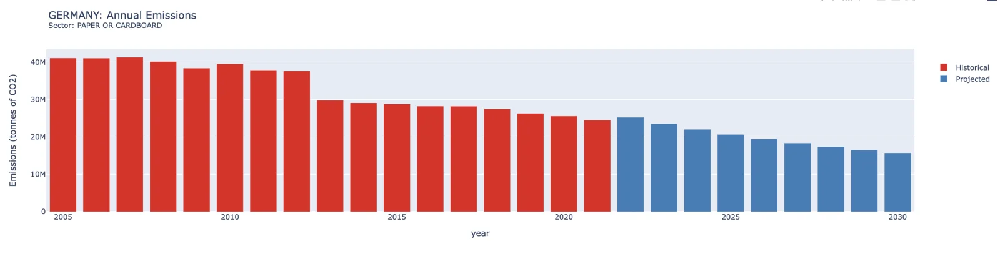

Global Stocktake Climate Datathon, 2022
Carbon trading: a cross-sectoral analysis of allowance pathways under the EU ETS
The EU Emissions Trading System caps the carbon that industry may emit and lets the allowances trade. This tool was built for the 2022 Global Stocktake Climate Datathon to make one lever of that system readable: how fast the freely allocated allowances are cut each year. Pick a country and a sector, set the annual reduction, and it draws historical emissions beside the emissions projected to 2030 under that cut, with the allowances behind each year on hover. It earned an Honorable Mention ahead of COP 27.
Tap to play
A pathway
Each bar is one year's emissions: historical in red, projected in blue.
